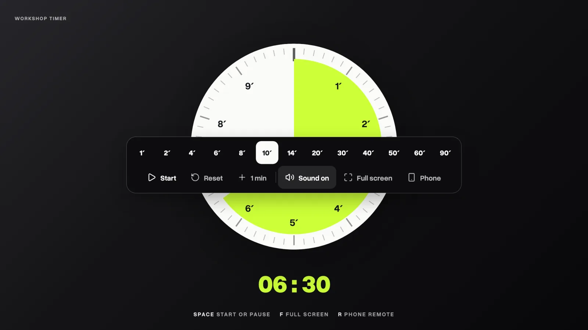
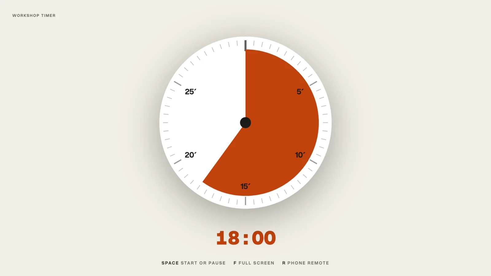
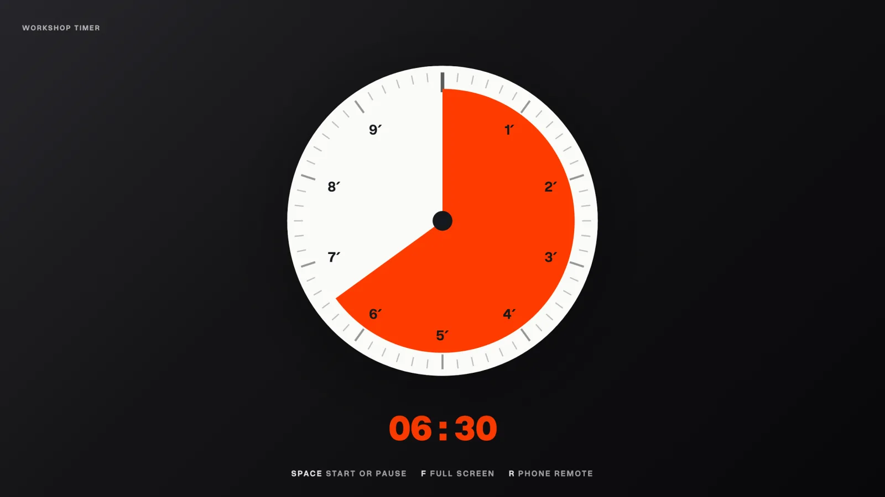
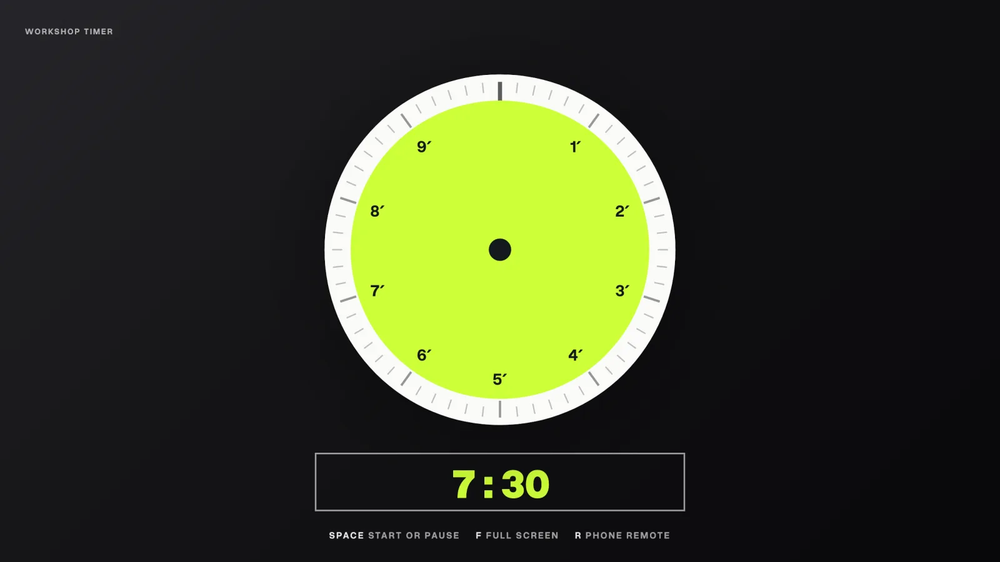
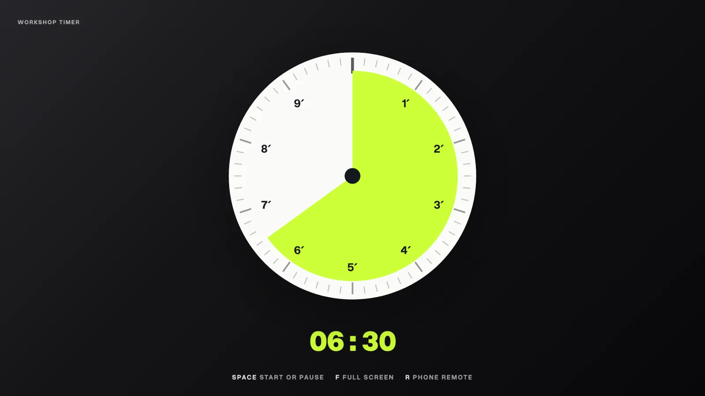
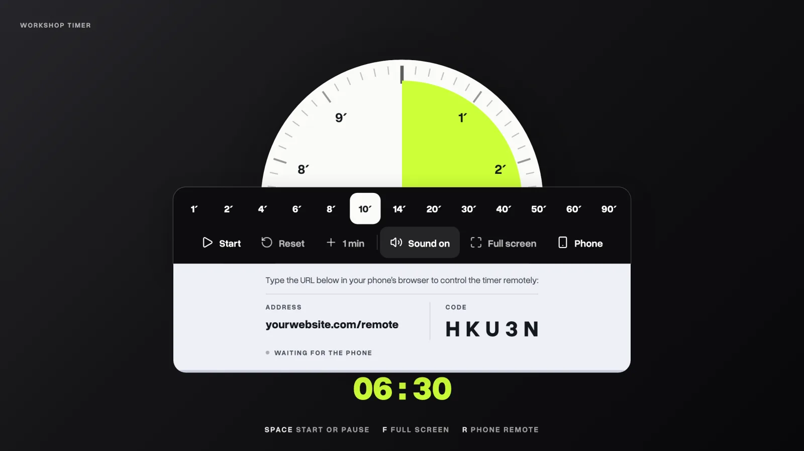
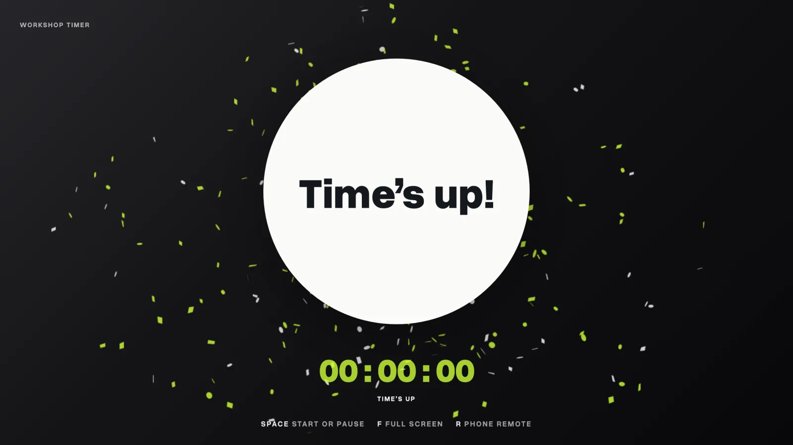

01
Pick an interval.
Tap one of the presets, from 1 to 90 minutes, and the dial fills for that length. It opens at ten minutes.

A workshop countdown timer for facilitators and trainers, with a phone remote.
Most software and desk timers are either paid, ad supported or plain ugly. They don't look yours. They also keep you staring at the timer, instead of paying attention to your participants.
Paste one prompt into Claude, Codex, Gemini or Antigravity. It downloads, installs and starts the timer for you.
> Set up the workshop timer from GitHub and start it.
Cloning the repository…
Installing…
✓ Timer running at localhost:3000
Describe your brand in plain words, or change one small file. No code to touch.

Host it at your own address, next to your site, so it looks like part of your event.

Press R, type the five-character code on your phone, and run the clock while you walk the room.
Simply ask any AI assistant to do it for you, ask it to customize it with your branding and then guide you through the steps of installing it on your website.
Open your AI assistant in an empty folder, and paste:
Get the code
Install, once
Run it
Opens at localhost:3000. Needs Node 20.9 or newer. No database, no accounts, no API keys.
Everything a brand can change lives in one small file. You never touch the code.
Paste this into your AI assistant, opened in your timer's folder.
Copy brands/example.json, change the values, and point the timer at it.
How to use it in a session, step by step.
Tap one of the presets, from 1 to 90 minutes, and the dial fills for that length. It opens at ten minutes.

Click the digits and type any time: 7:30, 25 or 1:30:00, then press Enter. Or put it in the link: /#7:30.


R shows an address and a five-character code. Open it on your phone, type the code, and drive the clock from anywhere.

A quiet tick speeds up in the last minutes, then a gong. Mute it with one button.

Silent brainstorms, dot voting, crazy eights. Everyone in the room sees the same clock, so nobody has to ask how much time is left.
Put the break on the screen and people come back on time, because they can see exactly how long they have, even from the corridor.
Work in focused rounds: 25 minutes on one task, then a 5-minute break, and a longer one after four rounds. Open it at /#25 or /#5.
The speaker sees the time from the stage while the host runs the clock from a phone in the crowd. Every pitch gets the same minutes.
One phone pairing survives the gong and runs timer after timer all day, from the first sprint to the final demos. No pairing again.
Dressed in the event's colours and fonts, so it looks like part of the stage, not a laptop app. Speakers see their time at a glance.
Yes. It is open source under the MIT licence: use it, change it, and use it for paid work, with no account and no subscription.
No. Paste the prompt from the Install section into Claude, Codex, Gemini CLI or Antigravity and the assistant does the setup. If you would rather type, it is three commands.
Any assistant that can work in a folder on your computer: the Claude desktop app's Code tab, Claude Code, Codex, Gemini CLI and Antigravity.
Yes. It needs a Node host such as Railway, Render, Fly or a small server, because the phone remote runs through it. Run exactly one copy, since live pairings are kept in memory.
No. It counts down to a deadline and recomputes from the wall clock every tick, so a background tab cannot slow it.
Yes, with the sound button. Movement also stops for anyone whose device asks for reduced motion.
Both go in the brand file next to your colours. Copy brands/example.json to see every field, or ask your assistant to make one for you.
Yes, and you do not need to know Git. Fixes, ideas and new brand files are all welcome. Describe the change to your AI assistant and it does the GitHub part for you. All you need is a free GitHub account.
Something like: “Contribute this change to github.com/tudorjuravlea/workshop-timer: [your idea]. Fork it, make the change on a new branch, follow CONTRIBUTING.md, run its four checks, show me the change, then open a pull request.” The rules it follows are in CONTRIBUTING.md.
GitHub runs the same four checks on it automatically, and the change is reviewed before it goes into the timer. You can follow it, and answer questions, on the pull request's page.
Yes. Open an issue on GitHub and say which browser and device you used. If it is about the phone remote, say whether the screen and the phone were on the same network.